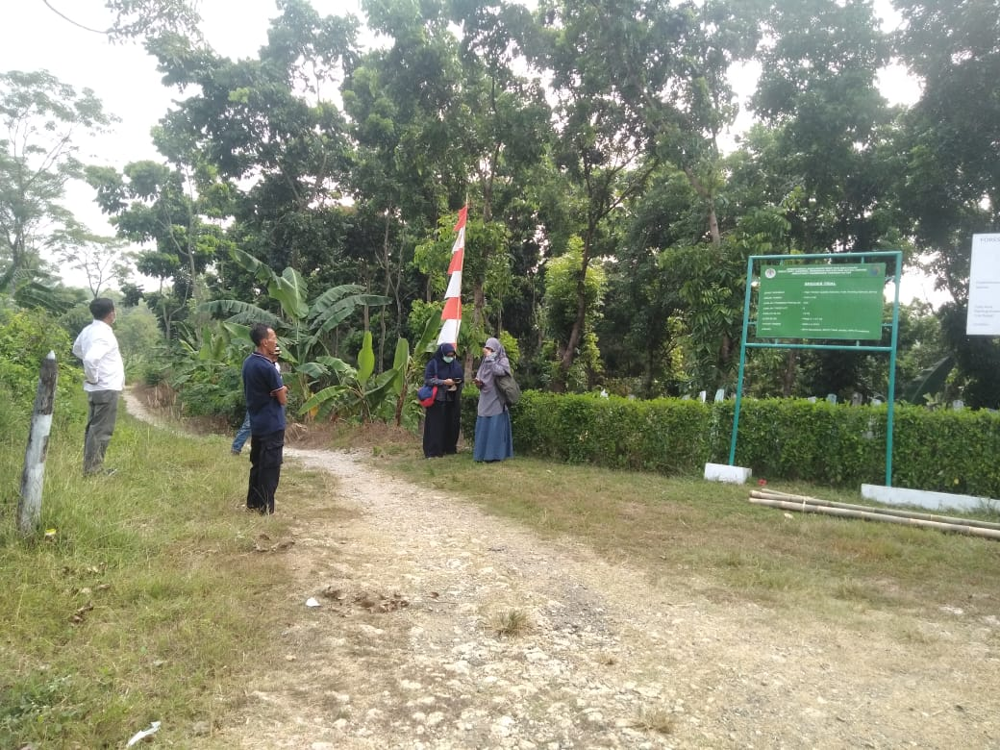
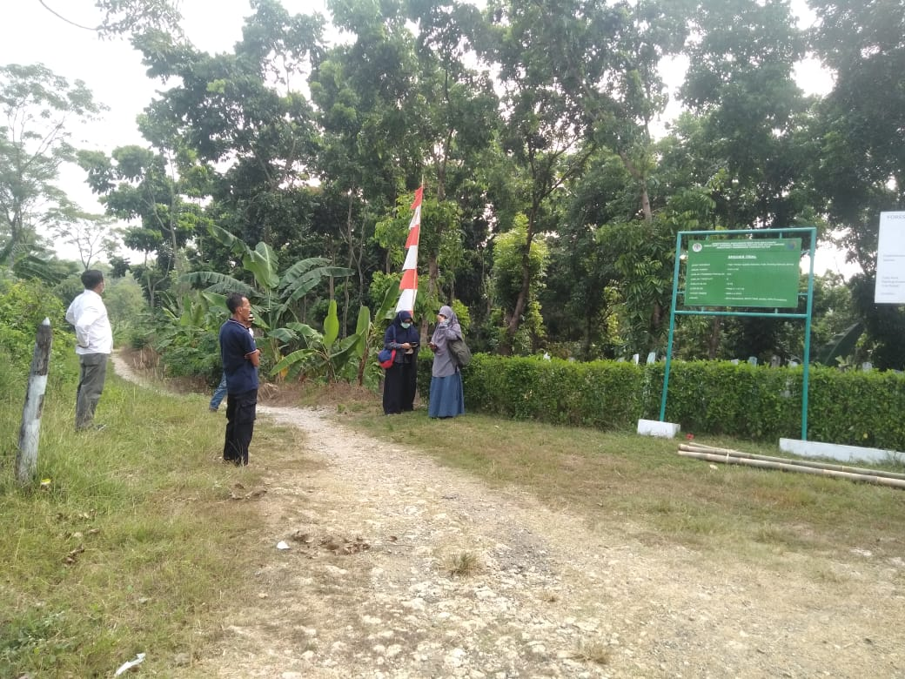
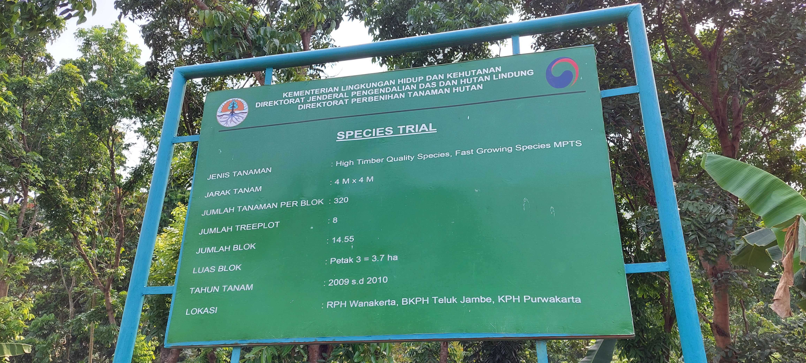
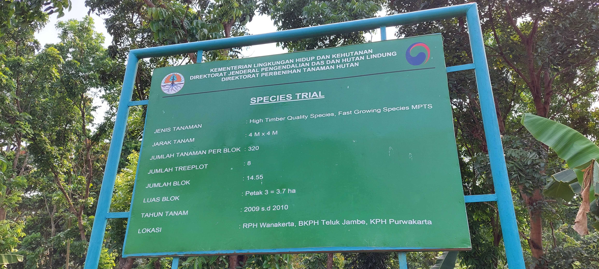
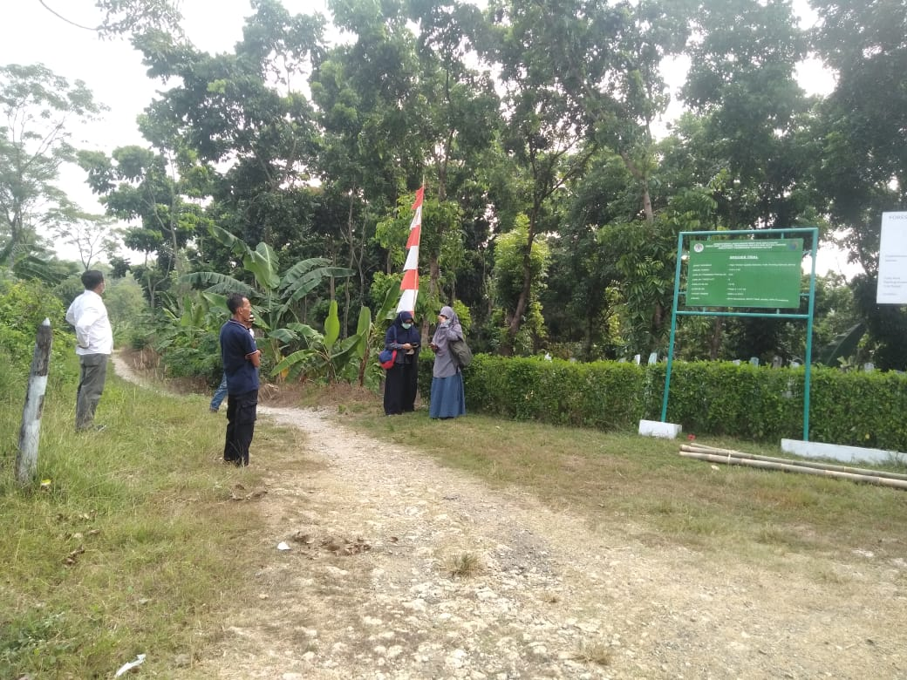
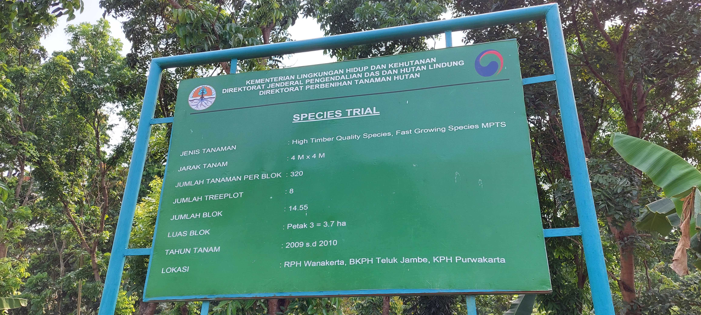

 
Nomor Sumber Benih
32.15.055
Nama Lokal
Mahoni
Nama Botani
Swietenia macrophylla
Luas (Ha)
0,81
Kelas SB
APB
Bioregion
Jawa Madura
UPT
BPDASHL Citarum Ciliwung
Provinsi
Jawa Barat
Kabupaten
Karawang
Kecamatan
Teluk Jambe Timur
Desa
Puseur Jaya
Garis Lintang
-6,368115
Garis Bujur
107,285885
Pemilik
Puslitbang Perum Perhutani
Alamat Pemilik
Jl. Wonosari Batokan, Cepu, Jawa Timur
Jenis Kepemilikan
BUMN
Nomor Sertifikat Sumber Benih
065/BPTH.I-3/SSB/2019
Tanggal Sertifikat Sumber Benih
23-December-2019
Masa berlaku Sertifikat Sumber Benih
23-Desember-2024
Jumlah Pohon
156
Musim Pembungaan
September s/d Oktober
Musim Buah Masak
Juni s/d Agustus
Estimasi Produksi Benih
-
Estimasi Jumlah Benih
-
Hasil Rata-Rata Pengunduhan/ Periode Panen
-
Pemanfaatan
-

